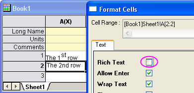

Dialog Zellen formatieren
FormatCells-Dialog
Markieren Sie eine Arbeitsblattzelle, mehrere Arbeitszellen, eine ganze Spalte oder mehrere Spalten. Klicken Sie mit der rechten Maustaste auf die Auswahl und wählen Sie Zellen formatieren, um die X-Funktion wcellformat zu öffnen und den Zellenformat festzulegen.
Beachten Sie, dass mehrere Optionen in diesem Dialog ausgeblendet sind, wenn Sie ihn bei einem vollständigen ausgewählten Bereich öffnen (d.h. einer kompletten Spalte oder einem Arbeitsblatt). Es handelt sich dabei um Format, Anzeige, Stellen, Signifikante Stellen und Dezimalstellen.
Zellbereich
Dies ist ein nicht bearbeitbares Textfeld, das den Zellbereich anzeigt, den Sie ausgewählt haben.
Rich Text
Dieses Kontrollkästchen wird verwendet, um festzulegen, ob Rich Text-Formatierung (z.B. hochgestellte Schrift) für die ausgewählten Zellen aktiviert ist. Bitte beachten Sie, dass die Optionen Frei beweglich und Ellipse nicht bearbeitbar sind, wenn dieses Kontrollkästchen aktiviert ist.
Wenn dieses Kontrollkästchen deaktiviert ist, sind die Schaltflächen für Format  nicht im direkten Bearbeitungsmodus verfügbar. Wenn Rich Text aktiviert ist, klicken Sie doppelt in die festgelegte Zelle, um den Bearbeitungsmodus zu öffnen, und wählen Sie einen Teil oder den gesamten Zelleninhalt. Beachten Sie, dass diese Schaltflächen verfügbar sind. Sie können sie verwenden, um Rich Text-Formatierung anzuwenden.
nicht im direkten Bearbeitungsmodus verfügbar. Wenn Rich Text aktiviert ist, klicken Sie doppelt in die festgelegte Zelle, um den Bearbeitungsmodus zu öffnen, und wählen Sie einen Teil oder den gesamten Zelleninhalt. Beachten Sie, dass diese Schaltflächen verfügbar sind. Sie können sie verwenden, um Rich Text-Formatierung anzuwenden.
-
- 
Eingabe erlauben
Dieses Kontrollkästchen erlaubt eine Texteingabe in die festgelegte Zelle. Wenn es aktiviert ist, klicken Sie doppelt in die festgelegte Zelle, um den Bearbeitungsmodus aufzurufen, und machen Sie eine mehrezeilige Eingabe mit Hilfe von Shift+Enter.
Umbruch für Text
Falls die Länge des Textes die Zellbreite übersteigt, wird der Text automatisch umgebrochen, um in die Zelle zu passen. Beachten Sie, dass Origin nicht in der Mitte von Wörtern umbricht.
Frei beweglich
Dies erlaubt dem Text, in dieser Zelle die nächste rechte Zelle zu überschreiben. Nehmen Sie zum Beispiel an, für die Zelle [1, 1] ist Frei beweglich aktiviert. Wenn die Länge des Textes in Zelle [1, 1] die Zellenbreite überschreitet und die Zelle [1, 2] leer ist, wird der Text in Zelle [1, 1] über den Bereich von Zelle [1, 2] geschrieben (siehe Screenshot).
Bearbeiten deaktivieren
Wenn dieses Kontrollkästchen aktiviert ist, können Sie den Zelleninhalt nicht bearbeiten.
Ellipse
Wenn die Textlänge die Zellbreite übersteigt, können Sie wählen, ob Umbruch für Text oder Frei beweglich verwendet werden soll, um den Text anzuzeigen. Falls allerdings weder Umbruch für Text noch Frei beweglich verwendet wird, kann eine Ellipse angezeigt werden, um dem Anwender anzuzeigen, dass nicht der gesamte Text angezeigt werden kann.
Dynamisches Zusammenfassen
Diese Option wird verwendet, um benachbarte Zellen, die den gleichen Text enthalten, automatisch zu verbinden. Verwenden Sie diese Auswahlliste, um die Richtung für das dynamische Zusammenfügen festzulegen. Es kann Horizontal, Vertikal oder Beides sein.
Format
Verwenden Sie diese Auswahlliste, um die Formatierung der Zelle auszuwählen. Diese Option wird nur angewendet, wenn das aktuelle Spaltenformat Numerisch oder Text & Numerisch im Dialog Spalteneigenschaften ist.
Anzeige
Bestimmen Sie die Anzeigeform für numerische, Datums- und Zeitdaten. Die Funktionalität entspricht den Optionen im Dialog Spalteneigenschaften. Der einzige Unterschied ist, dass es das Format für Zellen und nicht die gesamte Spalte bestimmt.
- Näheres zu Datums- und Zeitformaten, einschließlich benutzerdefinierte Formate, finden Sie unter Origins Formatspezifizierer für Datum und Zeit.
- Diese Auswahlliste Anzeige bietet Ihnen 4 Optionen für numerische Daten: Dezimal:1000; Wissenschaftlich:1E3; Technisch:1K; Dezimal: 1.000. Siehe auf dieser Seite weitere Unterstützung in Bezug auf benutzerdefinierte numerische Formate.
Stellen
Bestimmen Sie die Dezimalstellen für numerische Daten. Es gibt 3 Optionen in der Auswahlliste: Standard Dezimalstellen; Setze Dezimalstellen =; Signifikante Stellen =.
Signifikante Stellen
Diese Option wird nur gezeigt, wenn für Stellen die Option Signifikante Stellen= ausgewählt ist. Sie wird verwendet, um die Anzahl der signifikanten Stellen festzulegen.
Dezimalzahl
Diese Option wird nur gezeigt, wenn für Stellen die Option Setze Dezimalstellen= ausgewählt ist. Sie wird verwendet, um die Anzahl der Dezimalstellen festzulegen.
Schriftart
Diese Option legt die Schriftart für ausgewählte Zellen fest.
Schriftgröße
Diese Option legt die Schriftgröße für ausgewählte Zellen fest.
Farbe
Diese Option legt die Textfarbe für ausgewählte Zellen fest.
Füllfarbe
Diese Option legt die Farbe fest, mit der ausgewählte Zellen gefüllt werden.
Schaltflächen
Schaltfläche Anwenden: Diese Schaltfläche wendet die Einstellungen auf die ausgewählten Zellen an, schließt den Dialog aber nicht.
Schaltfläche OK: Diese Schaltfläche wendet die Einstellungen auf die ausgewählten Zellen an und schließt den Dialog.
Schaltfläche Abbrechen: Diese Schaltfläche schließt den Dialog und verwirft die Änderungen.